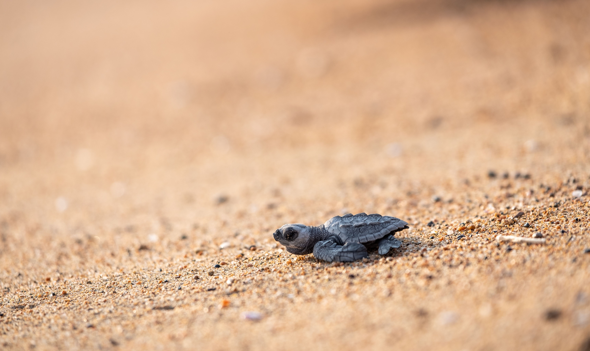
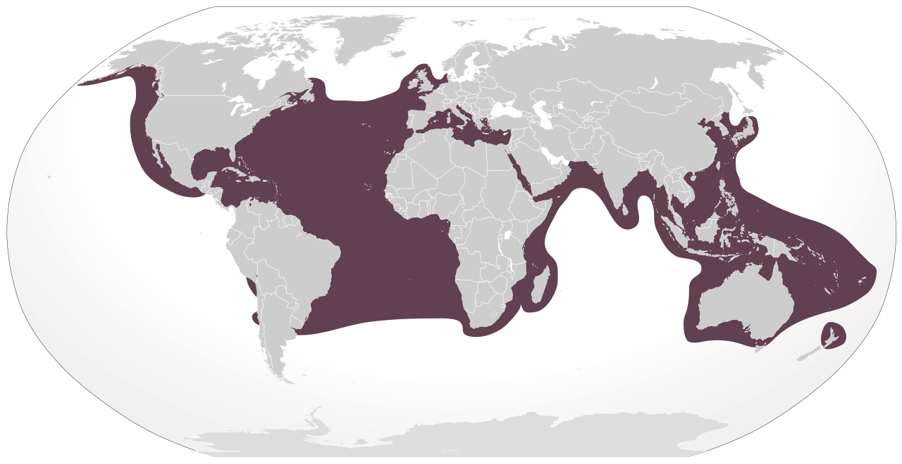

Quick Facts
- Size: 2.5-3.5 feet
- Weight: 155-375 pounds
- Lifespan: 70-80+ years
- Conservation Status: Vulnerable
- Range: Temperate and tropical oceans worldwide
Key Nighttime Adaptations
Loggerhead sea turtle hatchlings emerge from nests, instictively traveling towards the brightest horizon, usually the moonlight or sunlight reflecting from the ocean. These sea turtles then rely on Earth's geomagnetic field for long distance migrations.
Diet
Loggerheads are carnivores, feeding on marine animals near the ocean floor such as crabs, mollusks, and jellyfish. Their strong jaws help them crush hard-shelled prey. Their throat has spines helping to prevent prey like jellyfish from escaping.
Role in Ecosystem
These marine predators help control the population of other hard shelled marine animals, maintaining a balanced ecosystem. As they forage along the ocean floor they release trapped nutrients back into the water column. A loggerheads shell is known as a living reef, enabling many different species to attach and grow. This inadvertantly transports these organisms to new environments in which it promotes marine biodiversity.
Fun Fact: A loggerhead's nest can produce all-male or all-female hatchlings depending entirely on the temperature of the sand.


Light Pollution's Effect on Loggerhead Sea Turtles
Artifical lights are the most severe threats to the surival and successful repopulation of loggerhead sea turtles. When hatchling emerge from their nests, they instictively move towards the brightest horizon. Artifical lights disrupt this sense of direction as they are often much brighter than the natural light of the moon and stars reflecting off of the ocean. This leads hatchlings away from the ocean, increasing their risk of predation and reducing their chances of survival.